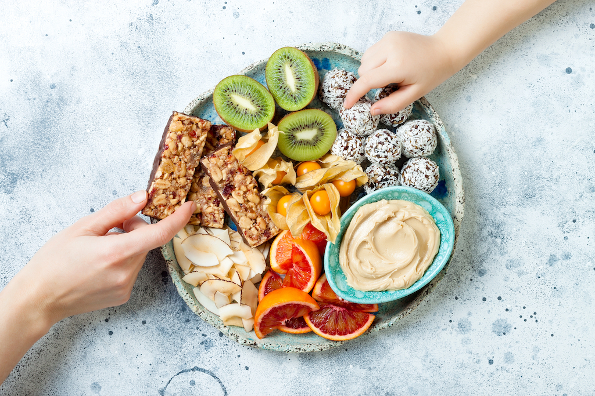

Snacking in between meals is not as bad as you think. Research has shown that having more frequent smaller meals are better for your health than having three large meals. I guess that means more SNAAACKS?! Well of course the snacks need to be nutrtious too otherwise all your health efforts will be counterproductive. According to research, even an apple can be considered a small meal. To me and you, that's a snack. But conscioulsy being aware of how much you are snacking is vital to ensure we are not overconsuming. Healthy diet research has shown that 5 to 6 small and frequent meals are good for your body. That may mean 3 tradtional meals (breakfast, lunch and dinner) with 2 'snacks'. As long as you are giving your body the nourishment it deserves with clean and healthy foods, don't be too harsh on yourself! Browse are healthy snacks recipe list and enjoy! 😋
Click below to find out what makes a healthy snack!
